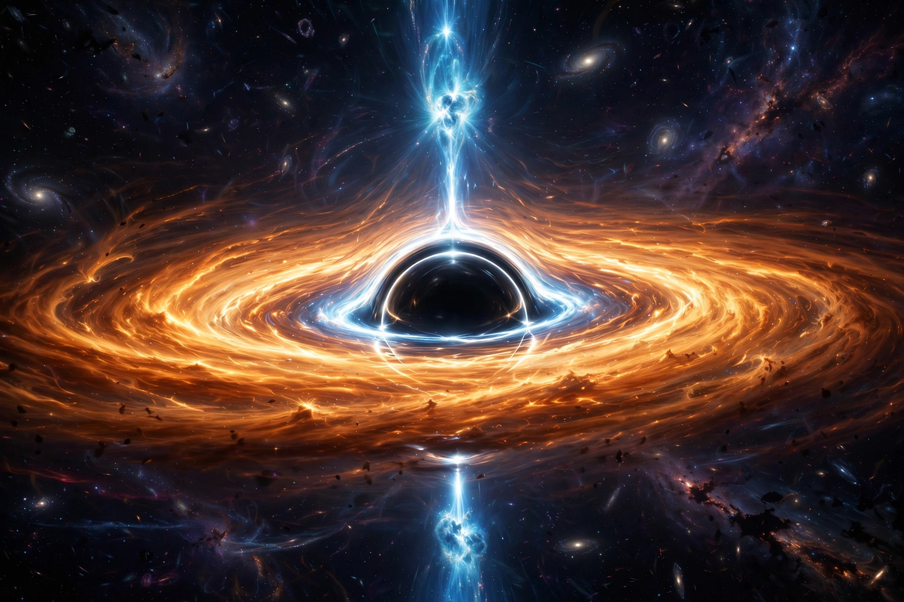

Quasar

[Image: Artist's impression of a quasar: a brilliant accretion disc around a supermassive black hole with jets]A quasar (quasi-stellar object, QSO) is an extremely luminous active galactic nucleus powered by a supermassive black hole surrounded by an accretion disc of infalling gas. Quasars emit so much energy — up to thousands of times the output of the whole Milky Way — that they are visible across most of the observable universe; the most distant known are seen as they were less than a billion years after the Big Bang.
Identified in the early 1960s when Maarten Schmidt recognised the enormous redshift of 3C 273, quasars revolutionised astronomy's sense of the early universe. Their brilliance, rapid variability and compact size forced the conclusion that black holes of millions to billions of solar masses were already in place when the universe was young.
Discovery and nature
Radio astronomers in the 1950s catalogued point-like 'radio stars' whose optical counterparts looked like faint stars but had unrecognisable spectra. In 1963 Schmidt realised the spectral lines of 3C 273 were ordinary hydrogen lines redshifted by 15.8%, placing it billions of light-years away and implying a luminosity hundreds of times that of a galaxy. The leading model — gravitational energy released by matter spiralling into a supermassive black hole — was developed by Edwin Salpeter, Yakov Zel'dovich and Donald Lynden-Bell.
Role in cosmology
Quasar numbers peaked when the universe was about 2–3 billion years old ('cosmic noon'), tracing the era of galaxy assembly. Their spectra record absorption by intervening gas (the Lyman-alpha forest), mapping the intergalactic medium, and the nearest examples illuminate the dormant black holes in today's galaxies. Some quasars launch relativistic jets close to the speed of light, visible in radio as lobes far larger than their host galaxies.